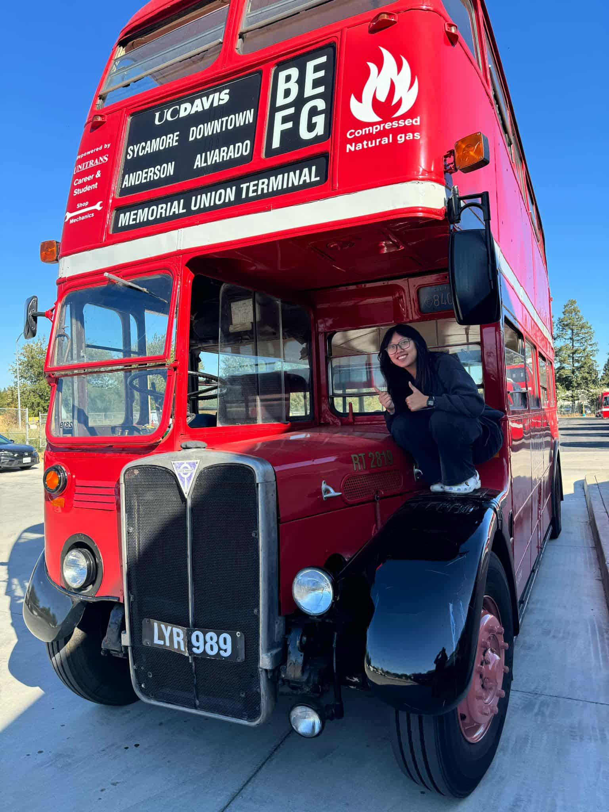

Who am I?
Hi, my name is Liew Jade Saefong and I am 23 years old. I am a she/her, Mien-American first generation college graduate! I am the youngest of six daughters! I also love food and building legos.
Majors
I entered college with the intent to go into medicine. I wanted to become a doctor which changed shortly after I experienced my first round of stem classes. To put it simply: It was a disaster. I quickly looked for alternative options.
To summarize my college major arc :
Work Experience
Greenhaven Place (Sacramento) Summer 2022
This was my first job that I ever had. During the summer of 2022, I landed a Concierge position at this independent
and assisted living
facility.
At this job, I worked at the front desk where I greeted residents and visitors entering the premises. I was in charge of greeting and assisting visitors, answering phone calls, and making sure to keep the lobby and
our copy room orderly.
I made sure to follow my daily assigned tasks. This was an
amazing first job oppurtunity
to have and I am thankful they gave me a chance to experience it.
UWP Writing Program (Davis) 1 Year
I became a student assistant for the UWP Writing Program in 2023 located in the basement of the Peter J. Shields Library on the UC Davis Campus. My duties and tasks were similar to Greenhaven Place where I'd greet visitors and keep the office space maintained for the lecturers and professors that shared the office.
Transit Driver for Unitrans (Davis) 2 Years
Shortly after being hired for the UWP Writing Program, I was surprised to learn that I was also hired by Unitrans for their Transit Driver position. I didn't expect to pass my interview. And yet, for what started off as a joke and a small posibility for me, quickly expanded and grew into a new passion. After a quick summer break in Puerto Vallarta, I returned to Davis to learn how to drive a bus with my driver trainer, mentor, and new friend, Alfredo.
Teller at Wells Fargo (Roseburg) 3 Months
I also had a short stint as a teller for Wells Fargo Bank in Roseburg, Oregon. I was hired during the spring of 2026 and worked there for about three months before I decided to leave. It was a good experience and I learned a lot about the banking industry, but it just wasn't the right timing for me.
Hobbies
Recently, I have picked up many different hobbies. I like to listen to music (especially pop), read, crochet, bowl, and build legos. I also love trying out new restuarants and playing videogames! (Unfortunately for me, these hobbies tend to cost a decent chunk of money.)
Life Anecdotes
I was able to make new friends and acquaintances, something I wasn't quite able to do during my isolated desk jobs. But best of all, I unlocked a new rare achievement in my life, aka whip a bus!
